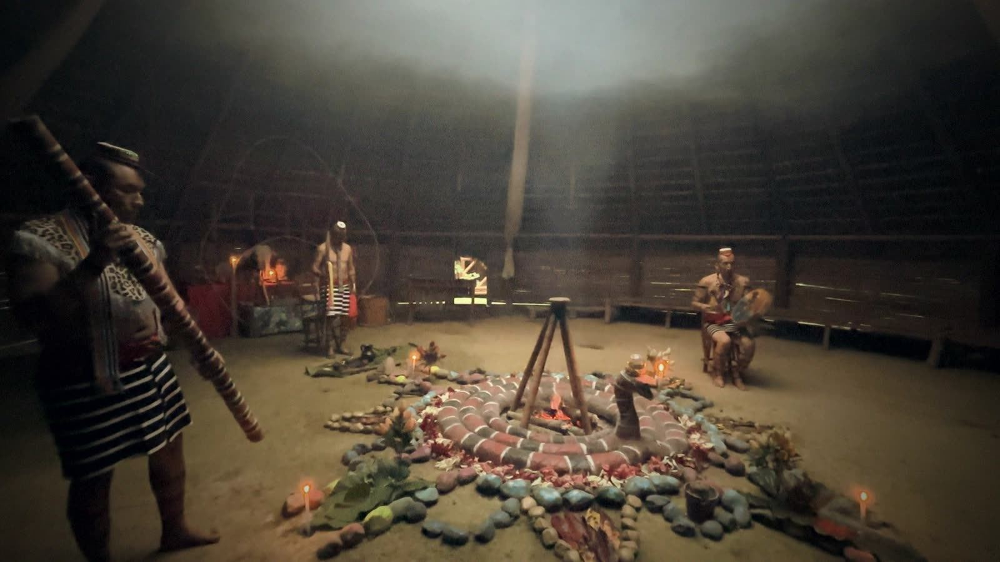
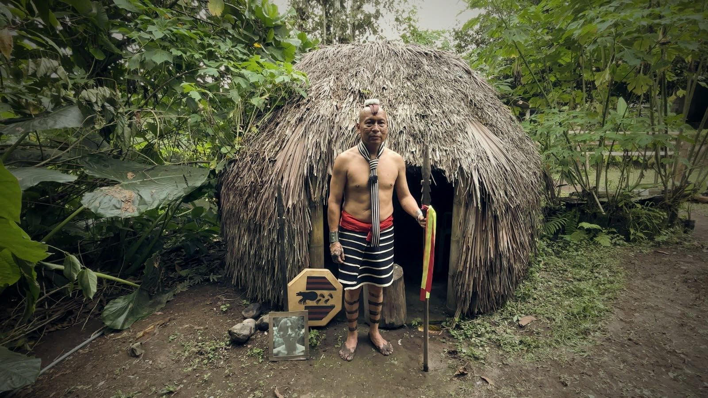
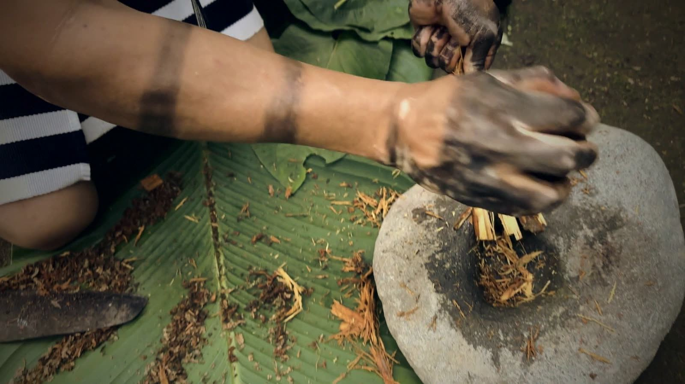
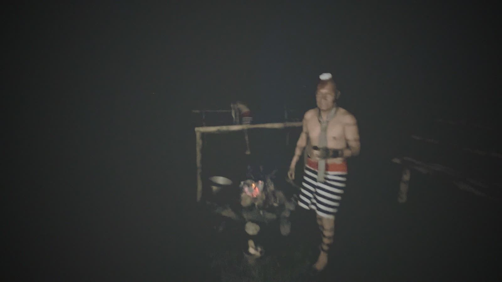

Con sonido.
Dentro de la maloka. Fuego, piedras y humo. Con sonido.
Para ellos, un chamán no se hace en un día. Se prepara desde niño.
Cada ceremonia empieza con fuego y con piedras elegidas una por una.
El conocimiento no se guarda en libros. Se guarda en la práctica de cada día.
Los tsáchila viven junto a Santo Domingo. Es un pueblo pequeño, de selva y de ciudad a la vez.
Este documental sigue a quienes aún practican la medicina ancestral, y pregunta qué pasa cuando esos saberes dejan de transmitirse.



